System Design Interviews with C4
Use C4 to keep the discussion at one abstraction level at a time:
Scope What problem and constraints are we solving?
↓
Context Who uses the system, and what is outside it?
↓
Container Which applications and data stores own the work?
↓
Component How does one high-risk container work internally?
↓
Detail Which critical mechanism needs further explanation?
- Scope is not a C4 level. It establishes the boundary and design drivers before drawing.
- Context treats the platform as one software system.
- Container opens that system into independently runnable applications and data stores. A C4 container does not mean only a Docker container.
- Component opens one selected container; it does not combine internals from several containers.
- Detail is optional. Stop when the important decision is understood.
C4 communicates architecture; it does not replace requirements, sizing, data modelling, security, reliability, or trade-off analysis.
Interview Flow
Mindset
- Clarify before drawing.
- State assumptions instead of becoming blocked by missing numbers.
- Follow one critical user journey through the design.
- Tie every box to a requirement or risk.
- Keep names and abstraction levels consistent.
- Zoom into the highest-risk part, not the most familiar part.
- Explain trade-offs; do not present technology choices as universally correct.
- Think aloud and use the interviewer as a design partner.
The flow
| Stage | Key questions | Output |
|---|---|---|
| 1. Scope |
|
Requirements, assumptions, scale, and one critical invariant. |
| 2. Context |
|
One in-scope system, its users, external systems, and labelled relationships. |
| 3. Container |
|
Major applications, services, workers, queues, and data stores. |
| 4. Deep dive |
|
A Component or Dynamic view, plus targeted implementation detail. |
| 5. Review |
|
Main decisions, failure modes, trade-offs, and next investigation. |
Key questions at every level
- Data: what enters, what is stored, and what is returned?
- Ownership: which component is authoritative for each state transition?
- Scale: what grows, how quickly, and where is the hot spot?
- Correctness: which invariant must never be violated?
- Failure: what happens on timeout, retry, duplicate delivery, or dependency failure?
- Security: who is authenticated, what are they authorized to do, and where is sensitive data handled?
- Observability: which latency, error, saturation, and business metrics prove the journey works?
Use Numbers That Matter for quick sizing and SLA, SLO & SLI for measurable reliability targets.
Worked Examples
Each example uses the same progression:
World → Software System → High-risk Container → Critical mechanism
C4 System Design Interview #1 — Ticket Booking System
Exercise
Design a ticket-booking platform for concerts and sporting events.
- Customers browse events and available seats, then select and purchase seats.
- Event organizers create and manage events and view bookings and sales.
- The application and email confirm successful bookings.
- An external payment provider processes payments.
- An event may have about
50,000seats. - Hundreds of thousands of users may arrive within minutes of an on-sale time.
- Critical invariant: one seat must never be successfully sold to two customers.
The critical journey is:
browse event → inspect seats → hold seat → pay → confirm booking → notify customer
1. Scope before C4
Identify the actors and the integration boundary before drawing architecture:
- Customer: browses events and purchases tickets.
- Event Organizer: creates and manages events; views bookings and sales.
- Payment Provider: authorizes and captures payment.
- Email Provider: delivers confirmation emails.
- Ticket Booking System: confirms the booking automatically after payment and reservation succeed; organizers do not confirm each booking manually.
The platform integrates with a payment provider, not normally with banks or card networks directly. Those downstream systems do not belong on this Context diagram because they are outside our direct integration boundary.
2. Context — the system in its world
The first interview mistake is drawing Booking System, Payment System, and Event System inside the Ticket Booking System. That mixes Context and Container levels.
At Context level, the entire platform is one software system. Show only people, that system, directly connected external systems, and why they interact.
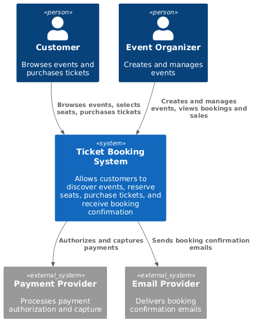
Walk the critical external journey:
Customer → Ticket Booking System → Payment Provider
Customer ← Email Provider ← Ticket Booking System
Do not expose databases, queues, internal APIs, services, or caches yet.
3. Container — open the Ticket Booking System
Say the zoom explicitly: “I am opening the Ticket Booking System.”
Derive containers from the critical journey rather than inventing microservices first:
Event Catalog Serviceowns events, venues, prices, and seat definitions.Seat Inventory Serviceowns availability, temporary holds, and reservations.Order Serviceowns booking and order lifecycle.Payment Serviceisolates payment-provider coordination.Notification Workerhandles confirmation outside the critical transaction.- Separate databases make ownership visible; the queue decouples confirmation email.
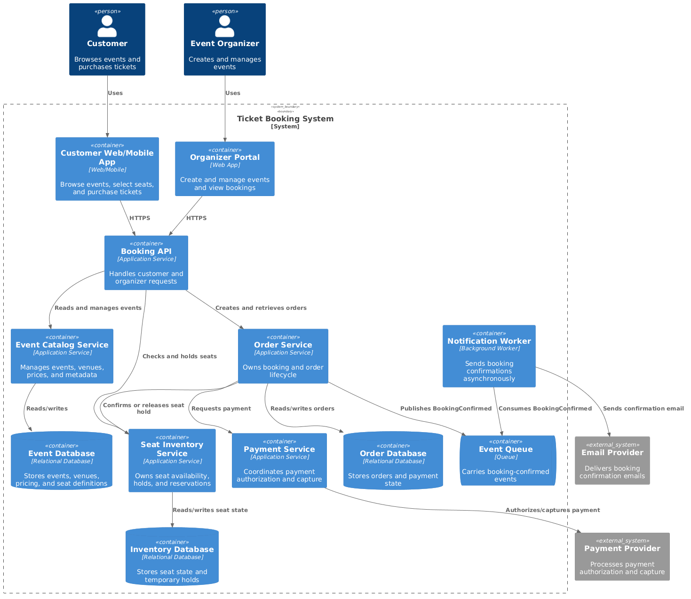
Seat Inventory Service and Order Service could begin as modules in one application. Separate deployment is justified only if responsibility, consistency, scale, ownership, or reliability requires it.
Here, inventory owns the hardest invariant:
A seat can belong to at most one successful reservation.
That makes Seat Inventory Service the best candidate for the next zoom—not because C4 requires another diagram, but because risk does.
4. Component — open Seat Inventory Service
Say: “The riskiest container is Seat Inventory Service. I will open that container to explain concurrent seat claims.”
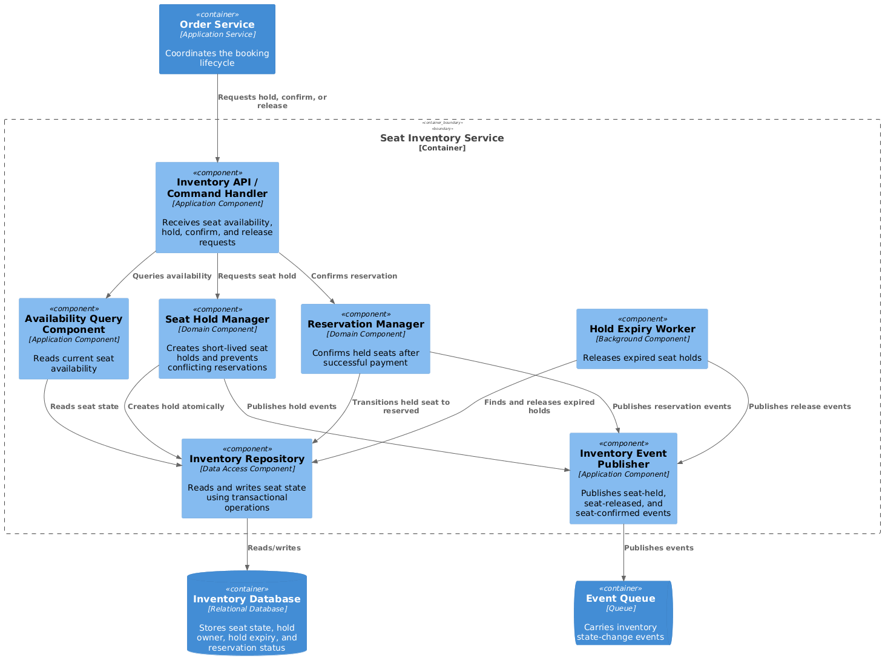
A Component diagram opens one selected Container. The database, queue, and Order Service appear only as dependencies outside that boundary; their internals are not exposed.
5. Targeted detail — prevent double booking
A read followed by an unconditional write is unsafe:
User A reads A12 = AVAILABLE
User B reads A12 = AVAILABLE
User A writes A12 = HELD
User B writes A12 = HELD ← race condition
The important property is an atomic conditional transition:
UPDATE seats
SET status = 'HELD', hold_id = ?, expires_at = ?
WHERE seat_id = 'A12'
AND status = 'AVAILABLE';
rows_updated == 1: this request acquired the hold.rows_updated == 0: another request changed the seat first.- The mechanism could be a transaction, conditional write, optimistic version check, or lock; the invariant matters more than the syntax.
The lifecycle is:
AVAILABLE ── hold atomically ──> HELD ── payment succeeds ──> RESERVED
│
└── expires / cancels ──> AVAILABLE
- Hold before taking payment, or the customer may be charged for a seat the platform cannot reserve.
- Give holds an expiry so abandoned checkouts release inventory.
- Make hold, payment, and confirmation commands idempotent because clients and services retry after timeouts.
- If payment succeeds but confirmation is uncertain, preserve payment/order state and reconcile; do not charge again blindly.
This is sufficient targeted detail. Do not draw a Level 4 code diagram unless the interviewer asks for the state-machine or storage implementation.
6. Pressure-test the design
- Traffic spike: protect hot events with admission control, a virtual waiting room, rate limits, and backpressure.
- Read scale: cache event metadata and seat-map views, but never treat cached availability as authority for acquiring a seat.
- Hot inventory: partition carefully by event or section; one popular event can become a hot partition even when total database capacity is high.
- Consistency: seat transitions require strong conditional writes; catalogue views and email delivery may be eventually consistent.
- Failure: use timeouts, bounded retries, idempotency keys, durable events, and reconciliation around payment and confirmation.
- Security: authenticate customers and organizers, authorize organizer actions by event, avoid storing raw card details, and audit booking changes.
- Observability: measure hold-conflict rate, checkout success, payment/confirmation mismatch, expired holds, queue lag, and p95/p99 booking latency.
Interview conclusion
- Scope established the boundary and the double-sale invariant.
- Context showed the platform as one system in its world.
- Container assigned runtime and data ownership.
- Component opened only the highest-risk container.
- Targeted detail proved how
AVAILABLE → HELD → RESERVEDremains safe under concurrency. - The design spends strong consistency on seat ownership while allowing catalogue reads and notifications to scale more loosely.
C4 System Design Interview #2 — IoT Sensor Dashboard
Exercise and scope
Design a dashboard for 1 million temperature sensors reporting every 10 seconds.
- Sensor Fleet: publishes timestamped device, location, and temperature readings.
- Operations User: views a heatmap within about
10 secondsand historical trends. - Critical risk: sustain bursty ingestion without losing replayability or corrupting aggregates with duplicate events.
sensor reading → ingest → validate/deduplicate → latest state + raw history → aggregate → dashboard
Context — one monitoring system
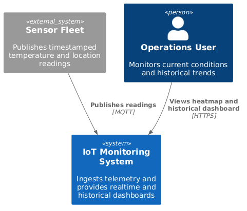
At Context level, MQTT brokers, streams, time-series databases, and workers remain hidden.
Container — open the IoT Monitoring System
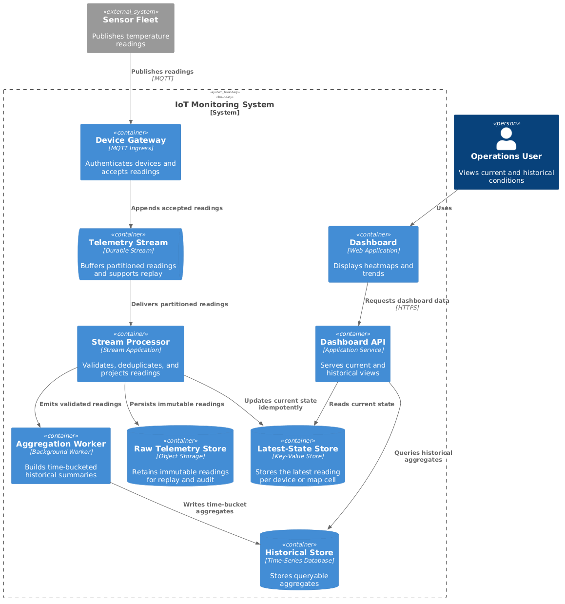
- The durable telemetry stream absorbs bursts and permits replay.
- The latest-state store serves the heatmap without scanning history.
- Raw storage preserves rebuildable facts; the aggregate store serves bounded historical queries.
- The dashboard API reads prepared views rather than coupling users to ingestion.
Component — open Stream Processor
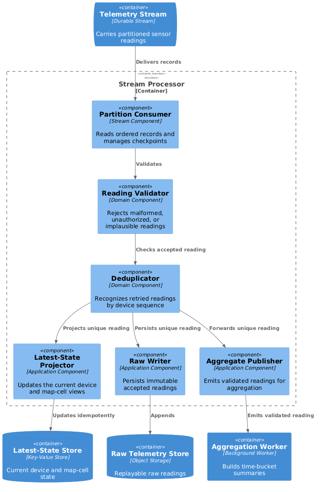
Targeted detail — size and protect ingestion
1,000,000 devices / 10 seconds = 100,000 readings/second average
100,000 × 100 bytes = 10 MB/second before overhead
10 MB × 86,400 = 864 GB/day
864 GB × 180 days ≈ 155 TB raw for six months
- Size for peak and reconnect bursts, not only the average.
- Partition by a stable device or region key while watching for hot partitions.
- Assume at-least-once delivery: identify events by
device_id + sequence/timestampand make updates idempotent. - Checkpoint only after required writes succeed; retain raw events so projections can be rebuilt.
- Downsample historical data by time bucket instead of querying six months of raw readings.
- Measure ingest lag, invalid/duplicate rate, partition skew, dashboard freshness, and replay time.
C4 System Design Interview #3 — Enterprise Support Chatbot with AgentCore
Exercise and scope
Design an authenticated company-support chatbot that can:
- answer policy questions from private documents;
- retrieve the live state of a support Case;
- propose updates to a Case, with authorization and approval;
- preserve scoped conversation memory;
- explain actions and produce auditable traces.
The critical boundary is:
model proposes an action → policy and application authorize it → deterministic API performs it
Context — one support assistant
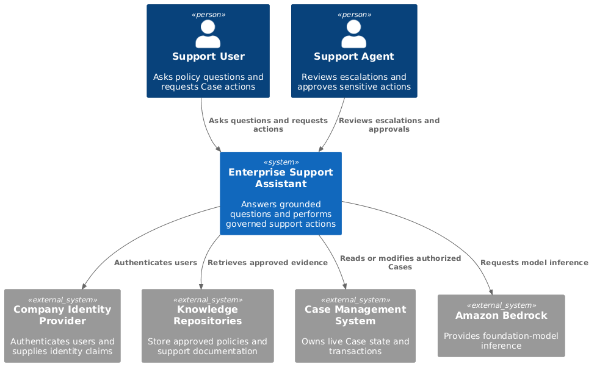
AgentCore is not the model or the chatbot itself. It supplies modular runtime, memory, identity, policy, gateway, and observability capabilities around agent code. See the official AgentCore overview.
Container — open the Enterprise Support Assistant
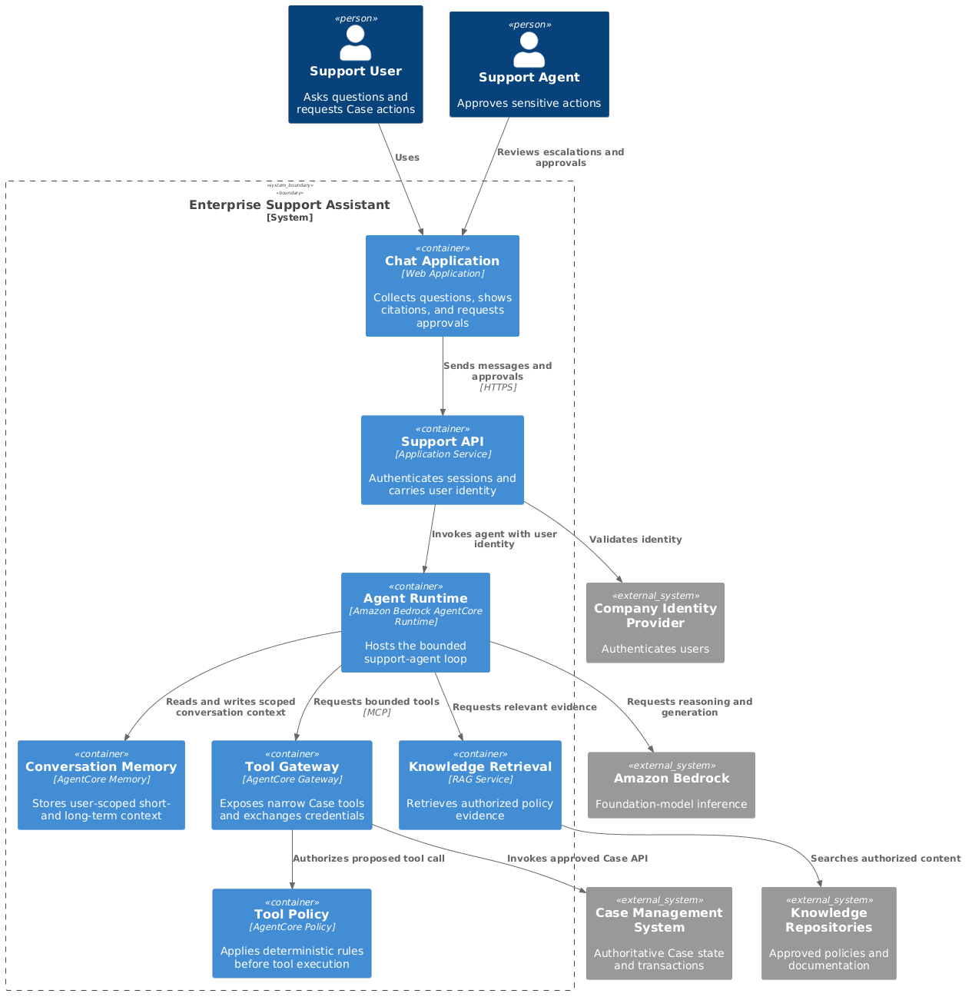
Support APIauthenticates the request and carries the user’s identity.Agent Runtimehosts the bounded agent loop and calls the model.Knowledge Retrievalsupplies current private policy evidence.AgentCore Memorystores scoped conversational context, not authoritative Case state.AgentCore Gatewayexposes narrow tools;AgentCore Policydeterministically checks proposed calls.- The Case Management System remains responsible for authorization, validation, and idempotent transactions.
Component — open the Agent Runtime
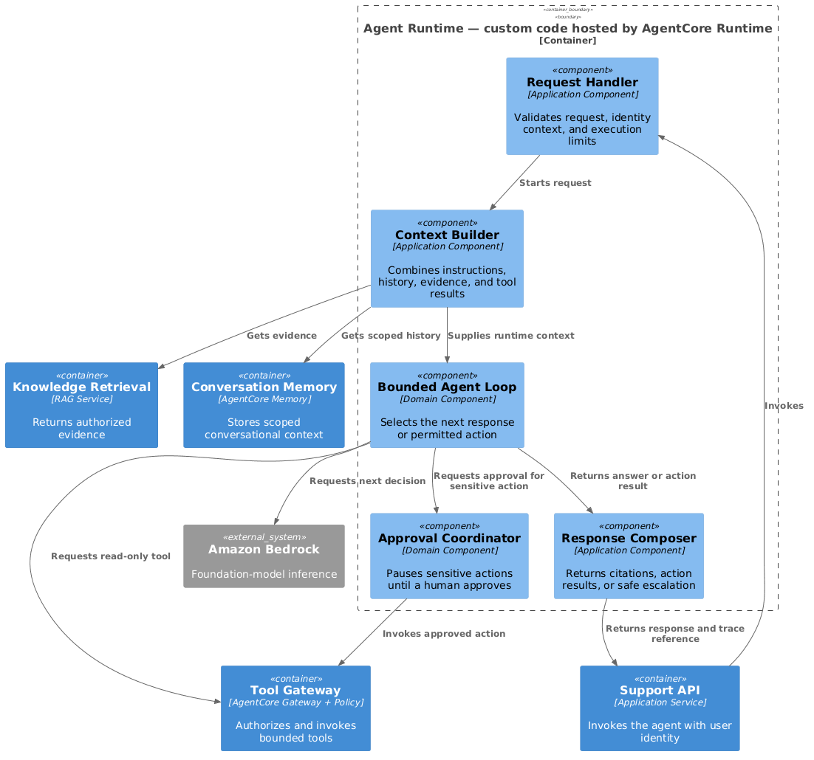
Targeted detail — separate knowledge, state, and authority
- Policy answer: retrieve approved documents, cite them, and abstain when evidence is insufficient.
- Live Case status: call a read-only
get_case(case_id)tool using the user’s delegated identity. - Case update: the model may propose
close_case, but policy, user approval, and the Case API decide whether it executes. - Transaction safety: pass an idempotency key; the Case API enforces “close exactly once.”
- Prompt injection: retrieved text and tool results are untrusted data, not higher-priority instructions.
- Failure: bound agent steps, tool retries, time, and token spend; return a safe partial answer or escalate to a human.
- Measure: grounded-answer quality, retrieval success, tool-call success, policy denials, approval rate, latency, tokens, and task completion.
For the full AWS service boundaries and industrial sequence, see AWS AI Services — AgentCore. For provider-neutral agent reasoning, see AI Agents.
C4 System Design Interview #4 — eCommerce Platform
Exercise and scope
Design an online store supporting catalogue search, carts, checkout, payment, inventory, fulfillment, and confirmation.
- Customer: browses products and places orders.
- Store Manager: manages products, prices, and stock.
- Warehouse: fulfils confirmed orders.
- Payment Provider: authorizes and captures payment.
- Critical invariant: confirmed orders must not oversell available stock.
browse → cart → reserve stock → authorize payment → confirm order → fulfil → notify
Context — one commerce platform
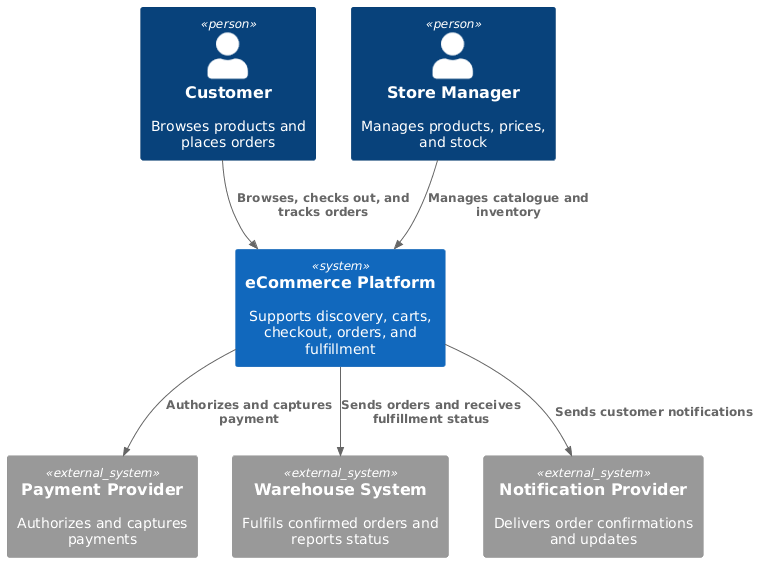
Container — open the eCommerce Platform
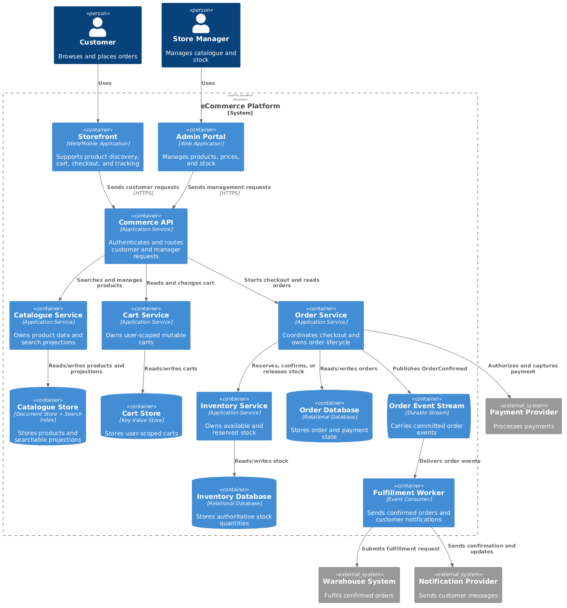
- Catalogue and search are read-heavy and may use caches or derived indexes.
- Cart is user-scoped, mutable, and not an inventory guarantee.
- Inventory is authoritative for reservable quantity.
- Order owns checkout state and coordinates inventory and payment.
- Fulfillment and confirmation consume committed order events asynchronously.
Component — open Inventory Service
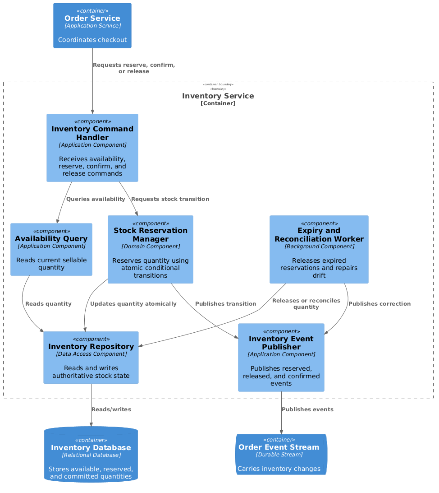
Targeted detail — prevent overselling
The cart may display approximate availability, but checkout needs an atomic conditional reservation:
UPDATE inventory
SET available = available - ?, reserved = reserved + ?
WHERE sku = ?
AND available >= ?;
- One updated row means the requested quantity was reserved; zero means insufficient stock or a concurrent buyer won.
- Reserve stock before payment, expire abandoned reservations, and release stock when checkout fails.
- Use idempotency keys for order submission, payment requests, reservation confirmation, and event consumers.
- Reconcile uncertain payment/order states rather than retrying financial side effects blindly.
- Cache product pages and search results, but never use the cache as checkout authority.
- Measure reservation conflicts, checkout conversion, payment/order mismatches, inventory drift, event lag, and fulfillment delay.
Final Checklist
- Did I establish actors, scope, scale, and one critical invariant?
- Does each diagram stay at one abstraction level?
- Did I announce which parent system or container I was opening?
- Can I trace one critical journey end to end?
- Is the source of truth for each important state clear?
- Did I justify boundaries from responsibility or risk rather than defaulting to microservices?
- Did I cover concurrency, retries, idempotency, failure, security, and observability where relevant?
- Did I explain the main trade-off and stop when further zoom added no value?